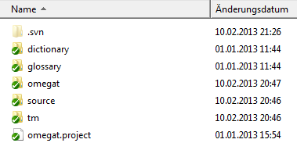

La traduzione in collaborazione offerta da OmegaT si basa sulla funzionalità di controllo della versione o revisione, largamente usata dalle comunità informatiche per tenere sotto controllo il codice di un programma e permettere la collaborazione senza intoppi all'interno della relativa squadra di sviluppo. OmegaT supporta due popolari sistemi di controllo della versione (abbreviati in VCS, Version Control System), Apache Subversion (spesso abbreviato in SVN, per il nome di comando svn) e Git. I vantaggi di un sistema VC per una squadra di traduttori sono riepilogati di seguito:
-
I vari membri della squadra possono lavorare simultaneamente sul progetto di traduzione, senza interferire con gli altri
-
Possono condividere materiale comune, come la memoria di traduzione e il glossario
-
Per impostazione predefinita, ogni tre minuti una versione aggiornata dei dati condivisi è disponibile al resto della squadra
-
Il controllo di versione dei dati condivisi viene mantenuto dal sistema
-
I conflitti - per esempio, le versioni alternative dello stesso segmento o di una voce di glossario - possono essere tenuti sotto controllo, risolti e uniti
I termini seguenti, da usare nel testo sotto riportato, necessitano di una breve spiegazione:
-
Server VCS - cioè il server SVN o Git è l'ambiente remoto di rete in cui è conservato e mantenuto il materiale condiviso. Esso può esistere nella rete locale, ma nella maggior parte dei casi sarà disponibile su Internet, ossia tramite un indirizzo URL. Un membro della squadra, l'amministratore del progetto, deve essere in grado di gestire il lato server: deve, cioè, impostare l'ambiente, importare il progetto OmegaT, assegnare i diritti di accesso ai membri della squadra, risolvere i conflitti, e via discorrendo.
-
Client VCS: per interfacciarsi col server è necessario installare, nei computer dei "gestori del progetto" facenti parte del progetto OmegaT, un client SVN o Git. Per l'ambiente Windows, TortoiseSVN e TortoiseGit sono client molto popolari. Gli altri sistemi operativi (Linux, OS X) offrono pacchetti simili.
-
repository (deposito): il luogo in cui viene salvato e mantenuto il materiale condiviso, sia su una rete di accesso locale, sia su Internet. I membri del progetto si collegano ad esso tramite il loro client VCS.
-
checkout: l'operazione che crea una copia funzionante dal deposito al proprio computer locale. Il server mantiene le informazioni sui checkout, affinché i commit (vedere sotto) successivi possano essere eseguiti in modo ordinato.
-
commit: una volta che una nuova versione locale del materiale scaricato (checked-out) è pronta, può essere inviata (committed) al deposito e resa disponibile al resto della squadra. Il server si assicura che tutte le modifiche in conflitto, dovute al fatto che due membri stanno lavorando sullo stesso contenuto scaricato, vengano risolte.
-
amministratore: la persona responsabile per la creazione e il mantenimento del deposito, ossia colui che si prende cura delle attività lato server. Per evitare problemi, una persona deve avere, almeno inizialmente, questi diritti.
-
utente: membro della squadra che collabora al progetto comune.
Esistono due possibilità per avviare un server SVN: è possibile installare SVN sul proprio server o usare servizio di hosting. Quando si usa un servizio esterno, bisogna essere consapevoli delle possibili implicazioni in termini di riservatezza, dato che si carica la documentazione originale in un server fuori dal proprio controllo diretto. In alternativa, al fine di evitare questo problema, è possibile configurare un server SVN privato, per esempio, se si possiede già un server Apache che include il software in questione (per es., VisualSVN).
Una volta che il server SVN è disponibile, per gestire i contenuti del progetto nei loro computer, i gestori del progetto devono installare localmente un client SVN. Per Windows raccomandiamo TortoiseSVN. Per Mac si può scaricare il client, per esempio, da SourceForge, per Linux vedere Comandi Subversion e script.
La procedura spiegata qui si basa sul server SVN gratuito (limitato a due utenti) offerto da ProjectLocker. Si noti che il creatore del deposito ne possiede implicitamente di diritti di amministrazione. Per prima cosa autenticarsi al sito o, se si accede per la prima volta, registrarsi e annotare nome utente e password per i futuri progetti.
-
Creare un nuovo progetto in ProjectLocker
-
Digitare il e la descrizione del deposito (
OmegaTeOmegaT SL Localizationnell'esempio usato qui) -
Scegliere
-
Fare clic su
Aprire la vista Projects per il proprio account. L'URL mostrato sotto Project Services sarà usato da SVN per connettere i client al server SVN appena creato. Si possono anche aggiungere membri della squadra al progetto e assegnar loro i diritti. Si noti che i membri della squadra, per poter essere aggiunti al progetto, devono prima registrarsi (nota: la versione gratuita di ProjectLocker consente solo due utenti per progetto).
I progetti possono essere gestiti in base allo stile di sviluppo e necessità. In modo simile ai progetti OmegaT, si avrà bisogno
di depositi separati per diverse coppie di lingua. All'interno di una coppia di lingua specifica, è meglio mantenere anche
oggetti e client diversi come depositi separati. L'alternativa è avere un singolo deposito con sottocartelle Progetto1, Progetto2, ecc., e condividere il materiale comune tramite cartelle tm, glossary e dictionary comuni.
Per l'esempio mostrato qui abbiamo deciso, per ragioni di semplicità, a fronte di un progetto OmegaT, l'uso di un singolo deposito.
Il deposito al momento è vuoto. Nel proprio disco rigido, creare prima una cartella client vuota. Creare una cartella vuota in cui mantenere il progetto e farvi sopra clic col pulsante destro del mouse. Selezionare TortoiseSVN > Checkout. Apparirà la seguente finestra di dialogo:

Digitare l'URL fornito da ProjectLocker all'interno del campo URL of repository. Assicurarsi che il campo Checkout directory sia corretto, ossia che specifichi la cartella vuota creata, poi premere OK. Una volta completata l'operazione, è possibile controllare la suddetta cartella: deve ora contenere una sottocartella .svn e un segno di spunta OK verde sulla sua icona, che indica che i contenuti della cartella sono aggiornati:
Nel passaggio successivo aggiungeremo i file OmegaT alla cartella locale. I file seguenti devono essere condivisi tra i membri della squadra e devono essere dunque, in ogni modo, inclusi:
-
il file del progetto omegat -
omegat.project -
la memoria di traduzione -
omegat\project_save.tmx -
i contenuti della cartella di origine
-
la definizione dei filtri specifici del progetto -
omegat\filters.xml
L'amministratore può decidere di includere anche le seguenti cartelle e i relativi contenuti: tm, glossary e dictionary. Anche i file ignored_words.txt e learned_words.txt contenuti nella cartella omegat possono essere condivisi e mantenuti a livello di squadra. Evitare, in tutti i casi, l'aggiunta di file bak, project_stats.txt e project_stats_match.txt, nella sottocartella omegat, dato che essi aumenterebbero, senza alcun beneficio o scopo, le dimensioni del deposito. Si potrebbe volere applicare la
stessa cartella target e i relativi contenuti.
Dopo aver copiato i file richiesti all'interno della cartella di checkout, si noterà che la sua icona è cambiata: il segno di spunta OK verde si è trasformato in un segno di esclamazione rosso, il che indica una modifica nella copia locale del deposito. I due passaggi seguenti aggiorneranno la versione del server:
-
aggiungere i file copiati alla versione locale del deposito: fare clic col pulsante destro del mouse sulla cartella di checkout locale e selezionare TortoiseSVN > Add. All'interno della finestra di dialogo che si apre, non modificare le opzioni predefinite e premere OK. Apparirà la finestra Add Finished!, simile a quella indicata sotto:

I contenuti della cartella di checkout verrà contrassegnata di conseguenza:

-
eseguire il commit delle modifiche locali nel server: fare clic col pulsante destro del mouse sulla cartella di checkout locale e selezionare SVN Commit.... Si aprirà la finestra Commit (vedere sotto). Selezionare le modifiche da fare - ossia le cartelle e i file aggiunti in questo caso.

Inserire un appropriato messaggio nella relativa finestra e premere OK. Si aprirà la finestra Commit, che mostrerà l'avanzamento dell'invio. Verranno prima inviati i contenuti correnti al deposito del server, poi aggiornata la copia locale del deposito - ossia i contenuti della sottocartella .svn - in modo da essere aggiornati all'ultima versione del deposito.
-
aggiornare i file locali dalla copia del deposito locale - le modifiche ricevute dal deposito del server risiedono all'interno della sottocartella .svn, ma non ancora all'interno dei file e delle cartelle in sé. Per aggiornare i file locali, fare clic col pulsante destro del mouse sulla cartella checkout e selezionare SVN Update. Verificare il contenuto della cartella per confermare che la copia locale del deposito, e i file e le cartelle in essa contenuti, corrispondano all'ultima versione del server:

Una volta configurato il progetto in collaborazione, i membri della squadra necessitano solo OmegaT per accedere al progetto. Per prima cosa, devono usare il comando Progetto > Scarica il progetto in collaborazione. Tale comando eseguirà un checkout del progetto in una cartella locale. Le credenziali di autenticazione vengono memorizzate, dunque non vi è necessità di digitarle ogni volta. In Linux, se OmegaT continua a chiedere l'inserimento delle credenziali, è possibile attivare la casella Forza il salvataggio della password come testo semplice.
Per il suo uso successivo basta solo aprire il progetto come qualsiasi progetto OmegaT. OmegaT riconoscerà che è un progetto in collaborazione e lo sincronizzerà in modo automatico, per impostazione predefinita ogni tre minuti.